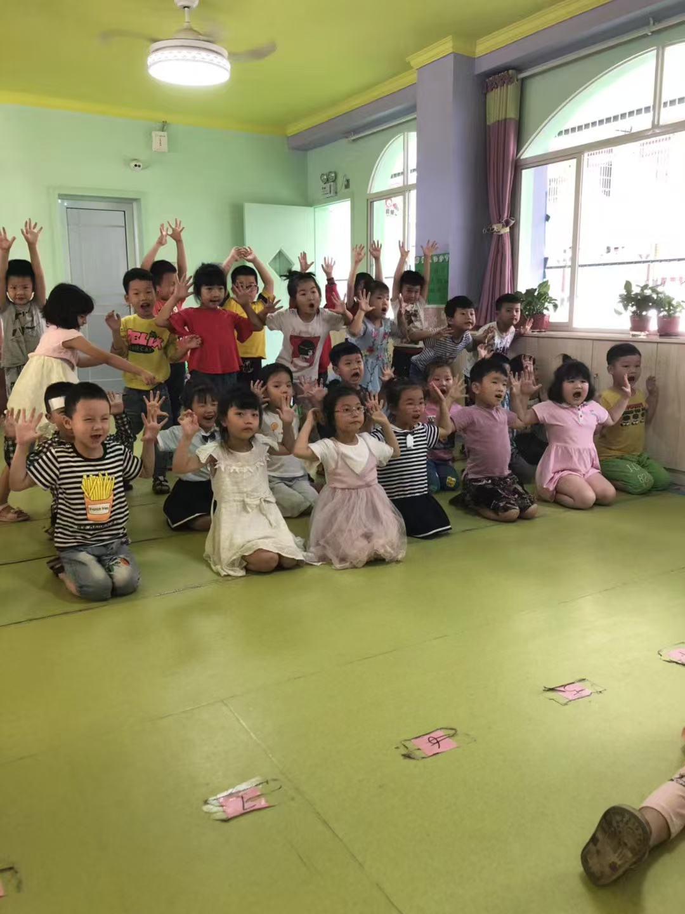

In China, more and more private kindergartens are choosing to close amid the country's declining birth rates.
"The last group of children left."
"The playground fell silent."
"For Wang Shan, closing was no longer a choice."
As dusk fell, the 43-year-old principal Wang Shan bid farewell to the last group of children in her kindergarten and sat quietly in her office. The Xinghe Kindergarten in Changsha that she had managed for over a decade was about to close. She gazed out the window as golden light filtered through layers of clouds, casting its glow on the playground, and sighed, depressed.
"Closing down is a decision we have no choice but to make, " Wang said, her face clouded with worry. "I don't know what my next step should be, and what the future of the entire private kindergarten industry will be."
In China, more and more private kindergartens are choosing to close amid China's declining birth rates.
According to data from the National Bureau of Statistics, China's top agency for collecting and analyzing statistics, the number of private kindergartens has been falling since 2019, from 173,236 to 135,454 in 2024.
Zhou Wenying, 45, founder of the Xingchen Preschool Education Group in Changsha, began to establish kindergartens in 2003. At its peak, the number of kindergartens under her group reached 11. However, she began closing her kindergartens last year, with only three kindergartens remaining now.
Since the end of the Covid lockdown, Zhou has witnessed a continued decline in student enrollment in her kindergartens. Enrollment numbers in the closed kindergarten had dropped to around 20 from about 200, while the number in the remaining kindergartens has now fallen to around 120.

"China's declining birth rates is the main reason for the closure of my kindergartens."
Data from the National Bureau of Statistics shows that China's birth rates has followed a long-term downward trend since 2016, from 13.57‰ in 2016 to 5.63‰ in 2025. Meanwhile, enrollment numbers at private kindergartens started to drop since 2017, from about 9.993 million to about 3.804 million in 2024.
"With fewer children enrolling, tuition fees are no longer enough to cover the operational costs," Zhou added. "A kindergarten in my group needs at least 130 children to avoid losing money."
Liu Huifang, a principal who has been in the kindergarten industry for more than 20 years, said that China's declining birth rates are a common reason for the closure of private kindergartens, since these kindergartens have no government subsidies, and their operation expenses are completely balanced by the tuition fees.
A 2022 survey conducted by the Preschool Education Professional Committee of the China Private Education Association, a leading committee specializes in Chinese preschool education, showed that of the 1,542 Chinese private kindergartens surveyed, 84% of them were short of funds, while only 1.5% were debt-free.
Source: principal interviews.
Setting tuition discounts, improving teachers' teaching skills and facilities, and even sending gifts to please parents, Zhou had taken every measure she could think of to boost the enrollment numbers, but to no avail.
"We are struggling. The number of births is falling, no matter how much effort we put in, we can't stop the loss of enrollments."
A parent's kindergarten closure experience, reconstructed through WeChat messages.
Repayment promised at a later date
No repayment date specified
Ms. Lin, 28, is a mother who is only willing to be identified by her surname for fear of escalating disputes with the Chengdu Langhua Kindergarten, where her 4-year-old daughter used to study before its closure.
She considered herself an “unlucky parent” in the wave of kindergarten closures.
On October 16th, she received an announcement from the school's WeChat group that the kindergarten had been closed due to a funding shortfall caused by low enrollment, and parents must pick up their children from kindergarten immediately.
“My child arrived at the kindergarten at 9 o’clock, and the kindergarten was soon closed at 10 o’clock,” Lin emphasized. “It is a bolt from the blue for me; the closure is so sudden.”
She is still struggling to find a suitable kindergarten for her daughter.
Although the kindergarten finally agreed to refund the tuition fees that were paid in advance after negotiating with parents, Lin said she was still troubled by this kindergarten closure.
Lin paid nearly 40,000 yuan for the tuition fees, but only received an IOU that promised to return the money by March next year. “We think we have few possibilities to get the money back since the kindergarten’s capital chain is broken,” she said.
Meanwhile, Lin is considering choosing a public kindergarten instead of a private one. "This was not part of our consideration before the closure," she said. “But these government-funded kindergartens may bring my child a more stable learning environment.”
Liu explained that a responsible kindergarten would apply to the local education bureau for closure approval and inform parents of the closure and follow-up measures at least three months in advance, which could help minimize these impacts for parents.
“Kindergartens that shut down and run away without advance notice may have greater impacts on parents,” said Liu.
Zhai Yin, 30, a mother who has a three-year-old boy who used to study at the Xinghe Kindergarten, said, “A lot of parents like me are worried about finding an alternative kindergarten for children and recovering the tuition fees we paid in advance after the closure.”
Zhai said she had already received the closure announcement from the kindergarten’s WeChat group four months in advance. Following the instructions from the kindergarten, she found an alternative kindergarten for her son in less than a week and received the refund after two months.
"This closure doesn't affect us too much since we quickly adapted to this change," Zhai said.
"For children, they may get uncomfortable with the changing environment," Liu said. "But young children can adapt quickly."
Liu, however, grew concerned about some parents' repeated questions about the likelihood of her kindergartens' closure when inquiring about enrollment.
"This degree of query was unprecedented in previous years within the industry."
She said that the numerous kindergarten closures will raise parents' doubts about private kindergartens' credibility and exacerbate the student enrollment challenges these kindergartens face.
Drag the slider to compare the space before and after the transformation.
In this closing tide, some private kindergartens have been repurposed from serving the young to serving the old.
According to a news report from The Paper, one of the leading Internet news media in China, Jinhua, Shenzhen, Taiyuan, Jinan and many other places in China have the practice of transforming kindergartens into elderly care facilities.
Zhou has joined in this practice. She transformed two closed kindergartens in her group into elderly universities.
Renovating the interior of the kindergarten classrooms and hiring around 20 teachers from art schools, Zhou opened 40 art courses such as Guzheng, and piano in the repurposed elderly university.
“Elderly people in China are increasing, care services for them could be a big market,” she said. “I don’t want to waste my closed kindergarten’s facilities. I want to have a try.”
According to a 2024 report released by the Ministry of Civil Affairs, the Chinese population has entered a stage of moderate aging, with the elderly aged 60 and above accounting for 22.0% of the total population by the end of 2024.
However, the demand for elderly care services in China is only met at 16%, and 84% of elderly needs have not been met nowadays, according to a survey in 2024 from the Zhongtou Consulting, a leading industrial research institution in China.
"This repurposing is a feasible choice for kindergartens facing the closing down difficulty as China's society ages," said Siu-Han CHAN, an Associate Professor in Sociology at BNU-HKBU United International College, "But since its market is new-born, the sustainability of this transformation still needs to be explored in the future."
"I can't say that my transformation has already been a success," Zhou said. "It may need more than three years to judge its success, just like the success I used to get from my kindergartens."
Zhou considered "keep pace with the times" the mentality that private kindergarten principals need to maintain.
"The time is changing, and we don't know what direction private kindergartens will go in the future."